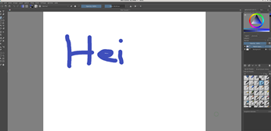
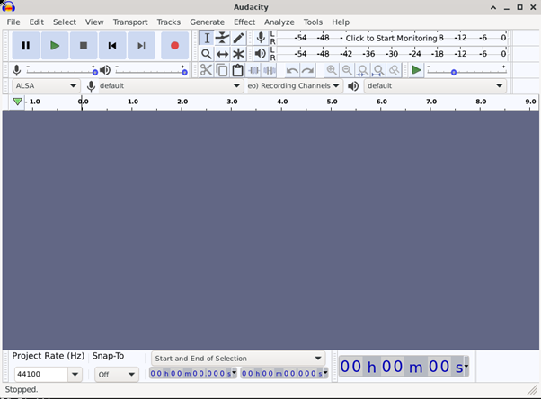
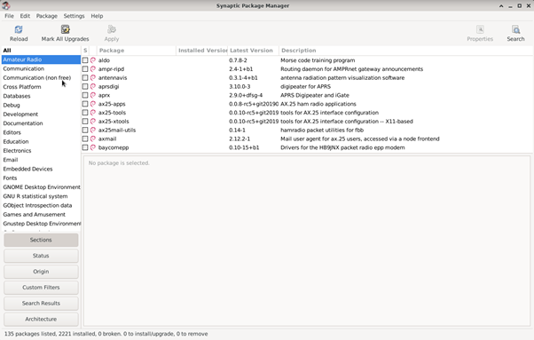

Tehtävä 1c ja 1d - Ohjelmien asentaminen ja niiden lisenssit
Päivämäärä: 22.1.2022
Opiskelija: Erik Ramm-Schmidt
Ohjelma: Piirrustusohjelma Krita
Lisenssi: GNU General Public License (GPL)

Ohjelma: Audacity
Lisenssi: GNU General Public License (GPL)

Ohjelma: Synaptic Package Manage
Lisenssi: GNU General Public License (GPL)

GNU General Public License (GPL)
Lähde: https://www.gnu.org/licenses/gpl-3.0.html
Lisenssiin kuuluu muun muassa seuraavat asiat:
- Koodia saa modifioida
- Koodia saa ajaa vapaasti
- Saa jakaa kopioita ohjelmasta, jos tekee muutoksia koodiin sen pitää ilmaista selvästi.